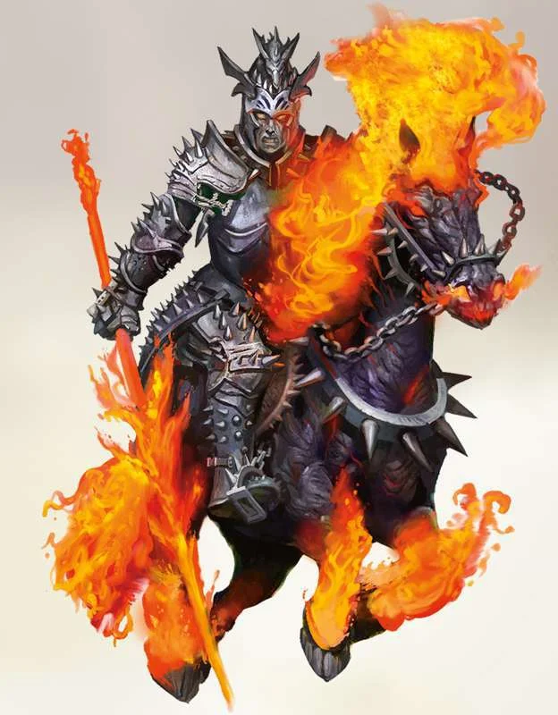
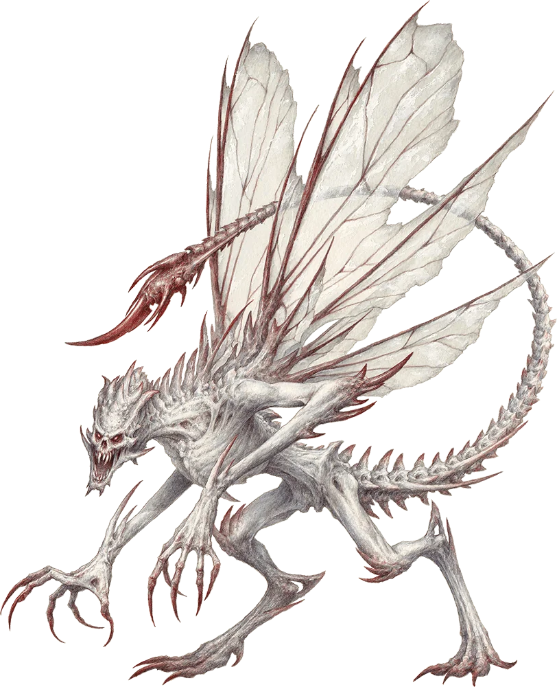
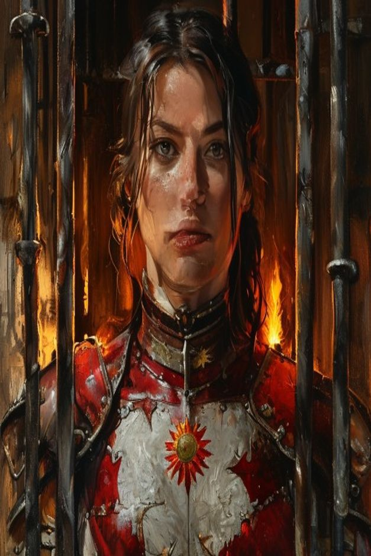
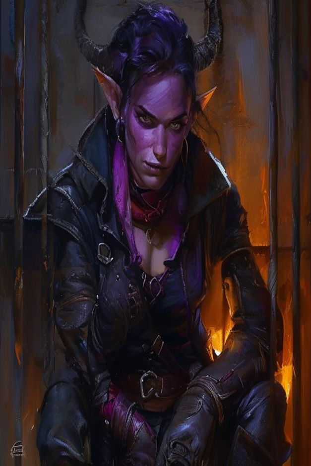
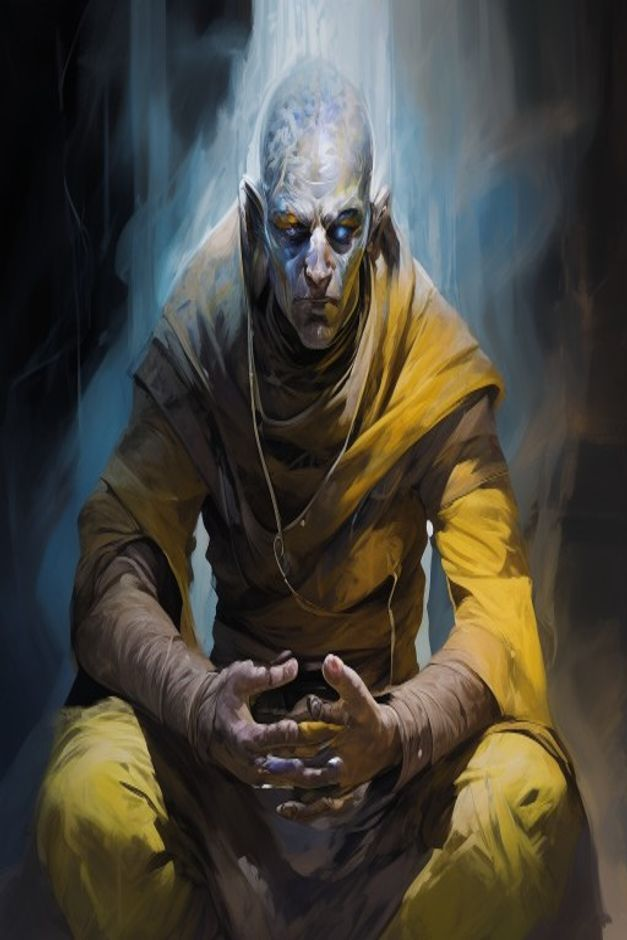
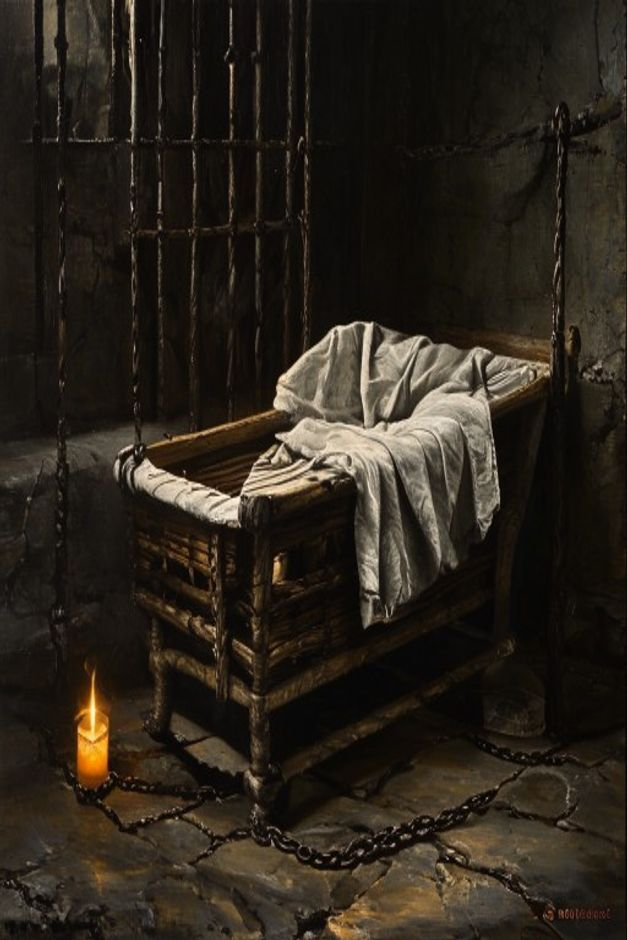
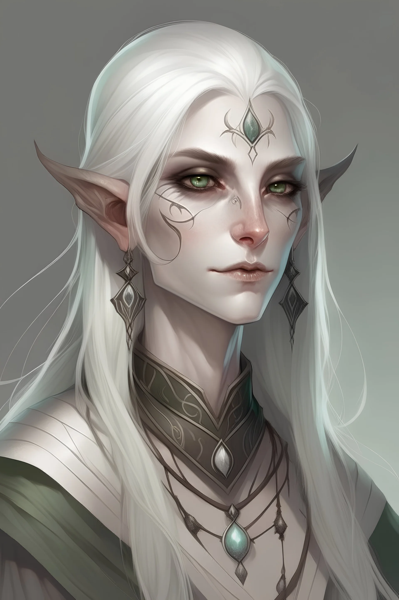
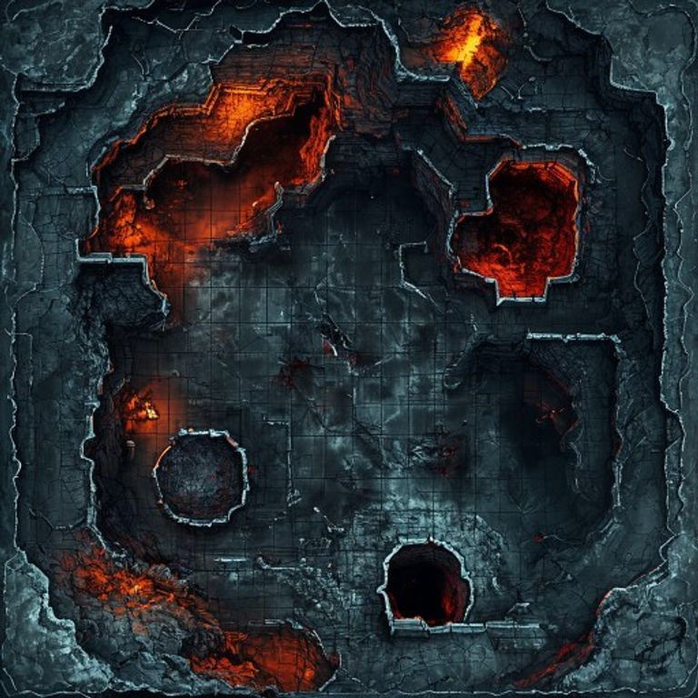
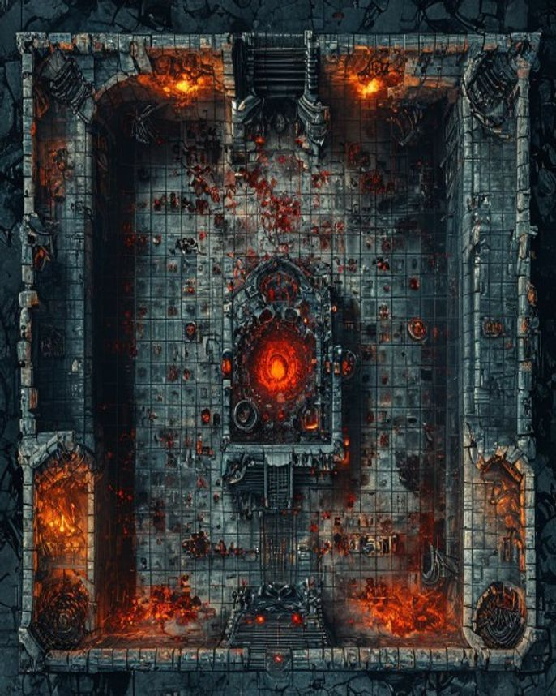
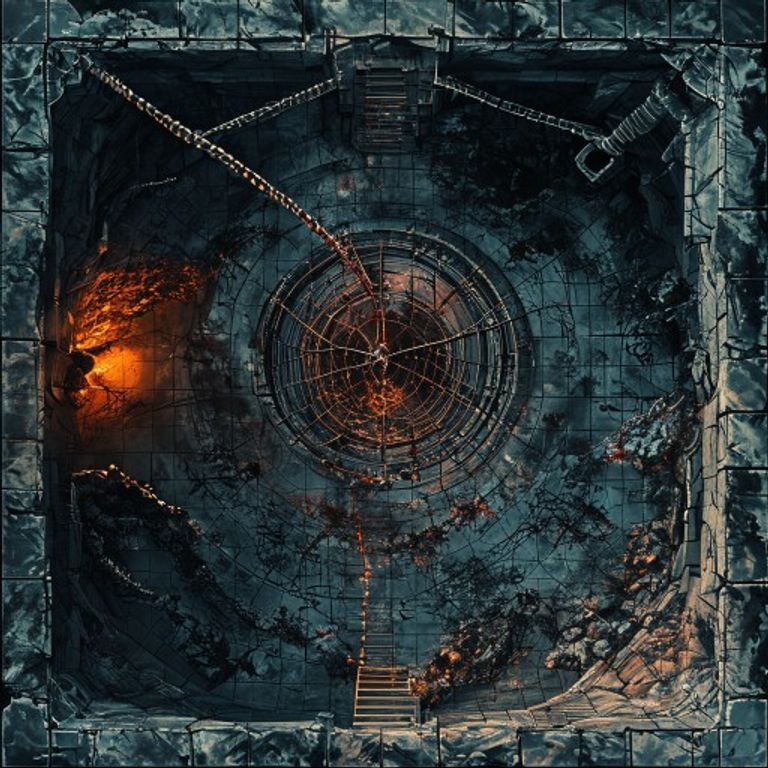

Bitter Breath of the Palace of Gore
- Moonkite Vitality (8 silver tokens): The Moonkite is alive but being drained. Tokens drop as time passes (-1 every 3rd round in Phase 1, every 2nd round in Phase 2, every round in Phase 3) AND as Bitter Breath uses certain abilities (Hostage Strike, Starlight Breath, violent chain breaks). At 0, the Moonkite dies — Aurora's wand shatters, the Moonbow fusion fails, her patron bond breaks, she gains the permanent Hollowed condition. This is the second HP bar of the encounter — keeping the Moonkite alive is half the win condition. Show the tokens to the players from minute one.
- Legendary Resistance (3 amber tokens): Each is a free auto-success on a failed save. Track visibly — when a player lands a big spell (Banishment, Hold Monster, Hypnotic Pattern), narrate BB burning a token. When the third one drops, the next save sticks.
- Round (number): Even rounds = a cage chain gets cut. Type to set; +/- buttons or arrow keys also work.
- Hostages (4 cage tokens): Click each to toggle CUT / SAVED / alive (default).
- Bitter Breath HP: Type to set, or use −10/−25/−50 buttons. +20 (Siphon) is for Phase 2 chain regen. P3 reset 200 button clicks at the Mythic transition.
Why a Vitality clock? Bloodbath died to a single lucky genie eat. This encounter has a second axis of failure — the Moonkite — so the players cannot win by HP alone. They have to balance damage, rescue, and stabilization. The Vitality clock is the puzzle.
⚔ Initiative Tracker
Design Thesis
Bloodbath was a wall to break. Bitter Breath is a riddle to solve under fire.
This fight is not harder because numbers go up. It's harder because:
- The Moonkite is on a clock that started before initiative was rolled. Damage to Bitter Breath does not stop the clock. Only specific, costly actions do.
- Every "obvious correct play" has a hidden cost. Sealing the door also seals their retreat. Destroying chains fast hurts the Moonkite. Killing the tank first frees the harasser to nuke. The optimal route exists but it is not visible — they have to read the room.
- Bitter Breath learns. Repeated tactics stop working. He banks Legendary Resistance for the spells that matter. He targets concentration on whoever just saved a prisoner.
- Three forced ethical choices before the killing blow: the hostages, the prisoners, and — at the end — what each PC is willing to lose.
Recap — Where We Left Off
- Party rode the Lady Vengeance down the river of blood, casting Air Bubble to seal the crew against the Choking Pall.
- Fought through 5 chain devils in the lower drainage tunnels (Bitter Breath's new infernal allies — replacing his brother's maw demons).
- Fired the ship's arcane cannons to collapse a section of tunnel, blasting the route forward open.
- The Lady Vengeance is now wedged behind the collapse — too large to follow, the crew sealed off behind tons of fused bone and blackite. No ship-borne extract. They walk out, or they don't walk out.
- Standing in the cooling silence of the Palace's lower passages, bone dust still drifting in the air, the Throne Room entrance ahead.
Cast Gallery
Reference portraits for table display. Click any portrait to enlarge. Empty slots show the expected filename — drop a PNG into Images/ with that name and refresh.

Bitter Breath

Gorewarden Thakk

The Barbed Consort

Hellrider Sgt. Veska

Yssel

The Mute Monk

The Infant

Aurora [PC]
I can't generate art. Here's where to find high-quality references for the empty slots:
- Bitter Breath ✔ already populated. The existing 8.5MB PNG in
Images/Bitter Breath.pngis what loads. - Thakk (Narzugon) → official art in Mordenkainen's Tome of Foes p. 165. Also: 5e.tools narzugon page has the WotC illustration. Save as
Images/thakk.png. - Barbed Consort (Bone Devil) → official art in Monster Manual p. 71. 5e.tools bone devil page. Save as
Images/consort.png. - Hellrider Veska → search "Hellrider of Elturel" art (Descent into Avernus splash pages). r/ImaginaryDnD has good fan art. Save as
Images/veska.png. - Yssel (tiefling) → search "tiefling rogue female" on Artbreeder, ArtStation. Save as
Images/yssel.png. - The Mute Monk (githzerai) → official githzerai art in the MM, or the WotC blog Avernus articles. Save as
Images/monk.png. - The Infant → consider not showing art. The mental image is more powerful than any picture. If you want art: a swaddled basket, no face. Save as
Images/infant.png.
If you want commissioned art at table-quality: r/HungryArtists, Fiverr, or ArtStation pros run ~$30–100 per character portrait. For AI generation, Midjourney v6+ with prompts like "dark fantasy character portrait, oil painting, dramatic chiaroscuro, by Wayne Reynolds and Tyler Jacobson" gets close to D&D book quality. Avoid free Stable Diffusion with default settings — that's the "AI slop" look.
The Veins of the Palace — Tunnel Approach (15–20 min)
The party emerges from the cannon-collapsed drainage shaft into the lowest level of the Palace's circulatory system — the Veins. A capillary network of bone-vaulted blood-channels carved into the cliff. The Palace was built on top of these. They are the only way up to the throne room. Bitter Breath uses them too — but tonight he's already above, on his throne, waiting.
Battle Map — Junction Hub

Pacing & Stakes
- Time pressure: Every 10 in-game minutes spent in the Veins, Bitter Breath gains a preparation tick — pick one before Phase 1 starts: +1 LR (max 5), +1 mook on the field, or one extra layer to his Mirage Arcana (Stage 2 disbelieve DC +2).
- Navigation baseline: Direct path through 2 mandatory nodes = 25 in-game minutes (2 prep ticks). Optional side routes add more.
- The silver pulse: Aurora's Wand of Celestial Warding senses the Moonkite somewhere far above. The wand is a compass — it points UP, toward the throne room and beyond.
- Vitality is NOT yet ticking — that clock starts when initiative is rolled in Phase 1.
The Junction (Entry Node)
You climb out of the cannon-collapsed shaft into a vaulted chamber — the lowest of the Veins. Cold blood splashes ankle-deep around your boots. Four tunnels branch out from the hub like the chambers of a heart, each one breathing slow and deep, as if the Palace is asleep around you.
One tunnel pulses faintly silver. Aurora's wand twitches toward it. Up. The Moonkite is far above.
The other three: one warm and red (sideways, toward heat), one cold and clean (sideways, toward fresh air), one black and silent (further down, toward something that doesn't move).
| Tunnel | Leads To | Cost |
|---|---|---|
| Silver pulse (up) | Direct route to the Throne Room via the Memory Pool + Whispering Grate | Standard. 25 min through 2 nodes. 2 prep ticks for BB. |
| Warm red (sideways) | The Chain Bridge — the 6th kyton on patrol, soul coin cache | +10 min (3 prep ticks total), 1 kyton fight, gain 5 soul coins. |
| Cold clean (sideways) | The Forgotten Cell — Ealoreth, the True Name of the Moonkite | +15 min (4 prep ticks), unlocks Aurora's "True Name" boon (advantage on Stabilize checks in Phase 3). |
| Black silent (down) | Dead end. Bone-spike pit trap (DC 15 Dex, 4d8 piercing). Wasted time. | +10 min (3 prep ticks), possible damage, nothing gained. |
Node 1 — The Memory Pool (on silver path)
A small chamber. The floor is a shallow basin filled with crystallized blood — old, glassy, faintly luminescent. Floating in it: memory-shards from the chain devils' centuries of victims. Each shard is a moment of someone's death.
1. A Hellrider's last stand outside the Palace 30 years ago. +1 inspiration to Drenwal next session.
2. Bloodbath drinking a paladin's blood. Drenwal feels his stomach turn. Bhaal influence +1.
3. A merchant's daughter, last alive in her caravan. Asimov gains 1 charge of "Soul Echo" — once per LR, ask the lamp a yes/no question about a target.
4. The Moonkite, fully strong, in flight over a celestial sea. Aurora gains 1 inspiration die usable tonight.
5. Dumal's face — close. Closer than expected. Dumal arrival clock advances from 12h to 8h.
6. Bitter Breath, a child, watching his brother win their father's love. Party gains advantage on Insight against him for the rest of the night.
Node 2 — The Whispering Grate (on silver path)
An iron grate set into the ceiling of a narrow corridor. Through it, upward, the party can hear voices echoing down from the Throne Room. Bitter Breath, on his throne, in conference with Thakk and the Consort. They're discussing the party.
BB's voice, calm: "Three of them. Cleric, Warlock, Rogue. Same makeup as the bounty bulletin."
Thakk grunts.
Consort, hissing: "They will scout us first. They always do."
BB: "Let them. Show them what I want them to see. The veil holds. The lieutenants stay in concealment until I snap. No one moves until then. Do you understand?"
Both lieutenants confirm.
BB: "And the cages — top them up. The infant is too quiet. Wake it. They need to hear it cry when they walk in."
Optional Node — The Chain Bridge (on warm-red path)
A narrow stone bridge, no railings, spanning a 60-foot ravine. Below: a slow river of blood draining downward. Patrolling the bridge: 1 chain devil (kyton) — the 6th of Bloodbath's old guard, missed in last session's sweep.
| Approach | Result |
|---|---|
| Combat | Standard kyton fight. AC 16, HP 85, Animate Chains DC 14 restrain. ~3 rounds. Drops 5 soul coins + a Chain Trophy. |
| Sneak past | DC 17 Stealth (group, disadvantage on the bridge — no cover). Failure = combat + disadvantage round 1. |
| Bargain | DC 16 Persuasion / Deception. Convince it BB sent you. On success: it stands aside, gives a path-shortcut (-5 min, -1 prep tick). |
| Cut the bridge | DC 14 Dex to leap clear. Kyton falls into the blood river — gone for good. Anyone who fails the leap also falls (3d6 fall + drowning saves). |
Optional Node — The Forgotten Cell (on cold-clean path)
A long-abandoned solitary cell, predating Bloodbath's reign. Inside: a starved, mostly-mad celestial scholar, a former planetar named Ealoreth, captured during the Blood War's earliest battles. He has been here for centuries. He no longer remembers his own face. But he remembers the Moonkite — and he knows her true name.
"You smell like the moon. Like... her. She's still alive? After all this time?"
"Listen. Listen carefully. I will say it once. I will only have the strength to say it once. Her name is —"
Exit — The Threshold of the Throne Room
The silver pulse fades — not because the Moonkite has weakened, but because it's directly above you now. The wand stops twitching and just glows steady, warm in Aurora's hand.
The corridor opens onto a final stone landing. Ahead, an arched doorway in carved blackite — the threshold of the Throne Room. Warm orange light spills through. You can hear the slow, deliberate breathing of someone waiting.
You step toward it. The Throne Room reveal begins.
- Junction choice: 2 minutes.
- Memory Pool: 5 minutes (let one PC touch a shard, narrate the vision).
- Whispering Grate: 5 minutes (Aurora's whisper attempt + group Stealth roll).
- Optional side route: 5–10 minutes if they take it.
The Approach (20 min)
Cold Open — Read Aloud
The dust settles. Behind you, the tunnel is choked with rubble — the Lady Vengeance's last cannonade did its work. Ahead, the passage opens into a vaulted chamber of fused bone and blackite stone. The ceiling is thirty feet high, ribbed with what look like the spines of enormous creatures. Gore drips from the joints. Not leaking. Pulsing. Like the building has a heartbeat.
And somewhere deep below, threaded through the silence — a sound. Not wind. Not water. A song made of grief, almost too quiet to hear. Aurora — your wand is humming in tune with it. The Moonkite is alive. Barely.
The Voice (Aurora — Pass a Note)
📜 Private to Aurora
"You are close. He has been cutting me. Quickly.
I can feel three of you. The cleric burns with a god he does not love. The hunter carries a lamp that could eat me too. And you. You I have known since before you had a name.
Do not be a hero. Be a sister."
The Moonkite is not asking to be saved. It is asking Aurora to make a specific hard choice later. Plant the seed.
The Throne Room Reveal — Two Stages
Bitter Breath is an Amnizu. Amnizus have innate Alter Self at will, Detect Thoughts at will, and Suggestion at will. He sensed the scouts. He let them see exactly what he wanted them to see. The room they're walking into has been under a sustained illusion network — Hell-granted Mirage Arcana woven into the Palace stones themselves, anchored to Bitter Breath's soul-sigil.
He learned from his brother's death. Bloodbath sat openly on a throne and got killed for it. Bitter Breath's lesson: never show your hand. Let them walk in confident. Then drop the curtain when it hurts most.
Stage 1 — Read Aloud (What They Expected, From Their Scouting)
The passage opens into the throne room. It's quieter than you expected — emptier, even. The vaulted ceiling is there. The bone-and-blackite walls are there. The throne is there.
And on it: a single figure. Lean. Coiled. Horns swept back like blades. Yellow eyes. He looks up as you enter, almost bored, turning a curved blade slowly in one hand. Two hobgoblin guards flank him — exactly as your scout reported.
This is what you came for. This is the fight you prepared for.
"You came." His voice is quiet. Almost amused. "I wasn't sure you would."
He stands. He sets the blade down on the armrest. He looks at each of you in turn — and smiles for the first time.
"You smell like my brother's blood."
"Let me show you what I learned from his death."
He raises one hand and snaps his fingers.
Stage 2 — Read Aloud (The Veil Drops)
The air shudders.
It's not a sound. It's a pressure — the feeling of something massive exhaling. The walls ripple like the surface of a pond struck by a stone. For a single breath, you see the room through itself: layered transparencies, a stage set being torn down by a hand you can't see.
And then the truth resolves.
The hobgoblin guards are still there — but now there are six, in formation, in proper Hellrider-broken plate. Behind them rises a wall of muscle in spiked black armor, tower shield bolted to his arm, breath fogging in the cold air — Gorewarden Thakk, who was standing in plain sight the whole time, hidden by a Veil.
From the ceiling, something drops. Spines first. It catches itself on the rib-vault and hangs upside down, flames pooling in its palms. The Barbed Consort. It tilts its head. "The master doesn't wish to be disturbed."
And behind the throne — four iron cages slide out of nowhere, suspended by chains that weren't there a moment ago. Each cage holds a prisoner. One of them is a child.
The throne itself transforms — from a simple iron seat into the real Gore Throne: fused weapons, shattered shields, dripping blood that pulses like a vein. The ceiling lifts ten feet higher than it was. The pillars grow ribs. The room becomes what it always was.
Bitter Breath has not moved. He is still standing. Still smiling.
"You scouted my house. Of course you did. I let you."
"Now sit down. I want to hear how he screamed."
- Disbelieving on first sight: If a player anticipated this and asks for an Investigation/Insight check the moment they entered, allow it: DC 22 (Amnizu's spell save DC 17 + 5 for the Hell-empowered illusion network). On success, give them "You sense layered enchantment — something is being hidden, but you can't tell what." They get one round of advantage on their first action when the Veil drops.
- If a PC explicitly cast Detect Magic earlier (during scouting): they sensed strong illusion magic but couldn't pierce it. Give them a free "I knew it" moment — they're not surprised when the Veil drops, and they get to act first in initiative if they tied.
- The reveal is BB's free action. It does NOT cost him initiative or actions in the upcoming combat. It happens before initiative is rolled.
- Why he reveals it: Tactical mind games. He could have ambushed them with the lieutenants, but the psychological weapon of "you've already lost the planning game" is more valuable. He wants them off-balance.
- Layout: corridors, entrance points, the drainage route they used.
- Confirmation that Bitter Breath was here (not somewhere else).
- The general size and shape of the throne room — they know the dimensions.
- Time-on-target: they got to set their buffs (long-rest spells, Aid, etc.) at full strength.
The illusion network is part of the deal: a sustained Mirage Arcana / Veil enchantment woven into the Palace's stones, anchored to his soul-sigil. It only drops at his command (or on his death — which is why future scouts of the wreckage will see the truth).
The Hostages — Setup Stakes Before Initiative
Behind the throne, four iron cages hang from chains. Inside each: a prisoner. Bitter Breath has been collecting leverage since he took the Palace.
If saved & survives: future contact for Drenwal's "die and be reborn" ritual under Tyr or Helm. Major arc seed.
If saved: free intel about Smiler's network + a future favor.
Future plot hook — alternate path home / planar shortcut.
Pure moral weight. No mechanical reward. Test of who they are.
House Rules — Read Aloud
"You came to my house. So we will play house rules.
Every two rounds you do not bring a weapon to my throat — I cut a cage's chain. The cage drops. The floor here is forty feet down, into the blood pool. They won't survive.
You can save them. I encourage it. Saving them is not killing me. The clock keeps ticking either way."
- Each cage hangs from ONE chain. 1 chain cut = that cage falls 40 ft into the blood pool = that prisoner dies (unless rescued mid-fall).
- Cuts happen at the end of EVEN rounds: round 2, round 4, round 6, round 8. Bitter Breath spends 1 of his 3 legendary actions that round to cut.
- 4 cages = up to 4 cuts total. If the fight runs longer than 8 rounds with no rescues and no kill, all hostages die. (BB picks the order — usually Veska first, infant last to twist the knife.)
- Click cage tokens in the tracker above to mark CUT (dropped) or SAVED (rescued mid-fall). Default state = ALIVE in cage.
Saving a Prisoner
- Action: DC 14 Athletics (running grab) or DC 13 Acrobatics (catching the chain).
- Spell: Misty Step / Levitate / Feather Fall / Mage Hand (with strength).
- Cost: Bitter Breath punishes the rescue with a free Forgetful Touch legendary attack on the rescuer (+9 melee, 1d6+4 + 4d6 fire, DC 17 Wis or memory wipe last 5 min — this can include forgetting the encounter so far). He explains: "That was charity. This is the bill."
Phase 1 — The Throne of Gore
Battle Map — Throne Room

The Map (ASCII Tactical Reference)
[ BARRACKS DOOR ]
|
[ MOOK SPAWN ]
|
[PILLAR] [PILLAR]
[BARBED CONSORT [GOREWARDEN
on ceiling] THAKK]
[BLOOD POOL] [ THRONE ] [BLOOD POOL]
(difficult raised (difficult
terrain) 5 ft up terrain)
[ CAGE 1 ] [ CAGE 2 ]
[ CAGE 3 ] [ CAGE 4 ]
(suspended above
the blood pools)
[PILLAR] [PILLAR]
[MOOK] [MOOK] [MOOK]
[MOOK] [MOOK] [MOOK]
[ ENTRANCE ]
Secondary Objectives — The Traps
These look like good ideas. Each has a hidden cost. Players don't get to know in advance.
| Objective | Effect | Hidden Cost |
|---|---|---|
| Destroy the Gore Throne (AC 15, HP 40, immune poison/necrotic) | Aura of Hellfire shrinks 30 → 15 ft | Bloodbath's Echo becomes passive — every round, ghostly silhouette flickers over the wreckage. PCs within 30 ft: DC 13 WIS or 1d8 psychic. |
| Seal the Barracks Door (DC 17 Athletics / DC 16 Thieves' / 30 dmg) | No more mook reinforcements | Their retreat is sealed. Plus: a 6th chain devil reinforcement is behind that door. Sealed = it claws through after Phase 1, joining Phase 2 fresh. |
| Kill Thakk first | Shield Wall ends, mooks scatter | Consort now focuses 100% on casters. Hellfire every round on Aurora. |
| Kill Consort first | No Counterspell threat | BB stops getting clipped by stray Hellfire. +1 to all attacks. Thakk's Shield Wall stays up longer. |
| Save all 4 hostages | Moral high, future allies | Burned ~4 actions and 100+ HP. Phase 2 starts with party near-broken. |
Communicate consequences after they happen, not before. Let them learn the cost. "You realize, as the throne crumbles, that something stays — a presence, watching. Bloodbath's echo, denied a tomb."
Lair Actions — Phase 1 (init 20, no repeat)
- Hellfire Geyser. Pillar of red-orange fire erupts under one creature BB can see. DC 16 Dex or 3d8 fire + prone. Leaves 10-ft radius difficult terrain (smoldering blood) until init 20 next round.
- Bone Cage. Bones erupt and cage one creature. DC 16 Str or restrained until end of next turn. Cage AC 12, HP 25.
- Bloodbath's Echo. Throne pulses. All within 30 ft (15 if throne destroyed): DC 15 WIS or frightened of throne for 1 round. BB immune.
- Cage Cut MANDATORY EVERY 2nd ROUND Replaces one chosen lair action that round.
Bitter Breath's Cunning — He Reads The Party
Run him as a chess player who hates losing. Apply these rules:
Rule of Repetition
Second time the party uses the same tactic (Aurora casts EB twice, Asimov flanks via the same pillar) — BB responds. "You did that already." He Repositions to break flanking. He uses Bone Cage on Asimov. He has the Consort save Counterspell for the spell Aurora just used successfully — he learned it matters.
Concentration Hunter
Whenever a PC saves a prisoner OR makes a Religion/Arcana check, BB uses a legendary Forgetful Touch on them next opportunity. "You looked away. Big mistake." Memory wipe is psychologically devastating — and it can erase the encounter knowledge so far.
Legendary Resistance Banking
Track 3 LR tokens visibly (above). Burn ONLY for: Banishment, Hold Monster, Hypnotic Pattern, Banishing Smite. When the third token comes off, narrate: "Something cracks behind his eyes. He shakes off your spell — but barely. You saw the fear." Now they know the next save lands.
Backline Targeting
If Asimov sneak-attacks turn 1, BB uses his bonus action to Wall of Fire between melee and casters next round, then engages Aurora directly. Don't always go for the easy melee target.
The Banter — He Diagnoses, He Doesn't Bluster
To Drenwal: "Your god isn't in this room. Did you notice? He let you walk in here alone."
To Aurora: "That song you hear? I taught it to scream."
To Asimov: "You smell like soul-rot. The lamp on your hip is louder than you are."
When Asimov reaches for Rasheem: "I know about the genie. I know what happened to my brother. Try it. I dare you."
Tactical Script
| Round | Bitter Breath | Lieutenants & Lair |
|---|---|---|
| 1 | Opens with Devilish Visage (60-ft cone, DC 17 Wis, 6d6 psychic + frightened/restrained 1 min). Deletes the party's opening tempo. | Thakk shoves nearest melee toward blood pool. Consort opens with Sting on Aurora (concentration breaker). Mooks form screen. Lair: Hellfire Geyser. |
| 2 | CAGE CUT 1 Cuts the Hellrider's chain. "Tick." Then Multiattack on whoever's wounded. | Consort holds Counterspell for first big spell. Mooks reinforce (1d4) from barracks door. Lair: Bone Cage on the most-progress PC. |
| 3 | Wall of Fire across the room — cuts Asimov off from casters OR seals BB in a defensible pocket. | Thakk uses Infernal Tactics (gives ally advantage). Consort drops to floor if needed. Lair: Bloodbath's Echo. |
| 4 | CAGE CUT 2 Cuts the infant's cage. No editorializing. Just describes the chain parting and the basket falling. Let the table go silent. | Consort goes all-in on the rescuer next round. Mooks try to bodyblock the rescue path. |
| 5+ | Adapt. If party rolling well: escalate (Devilish Visage recharge, Fireball). If hurting: ease back, give Thakk a critical death. | Use lair actions to keep pressure. Reveal LR token #1 here for a Banishment save. |
★ Phase Change · Bloodied Break ★
Read Aloud — Cinematic Sequence
Bitter Breath staggers. Blood — his own — drips from a wound on his flank. He touches it. Looks at his fingers. The Hellfire on his staff sputters for the first time tonight.
His expression doesn't shift to fear. It shifts to something worse.
"You want to take everything from me. My brother. My throne. My fortress."
He grips the armrest of the gore throne and RIPS it free — a jagged slab of fused weapons and bone, six feet long, dripping. He raises it overhead and swings it into the nearest pillar.
The pillar CRACKS. Dust rains from the ceiling. A second pillar groans in sympathy. The room is no longer stable.
"Then come TAKE it."
He turns and BOLTS — not through a door — through the FLOOR. His horns punch through the stone behind the throne, opening a ragged hole the size of a man. You hear him crashing down. Toward the prison. Toward the Moonkite.
The room shudders. From below — a pulse of silver light, painfully bright through the cracks in the floor. Then a sound that isn't sound. It's inside your heads. Grief, weaponized.
The Moonkite knows what's coming.
Mechanical Effects — During Transition (Free Round, no initiative)
Bloodbath's Echo (if throne destroyed earlier) becomes hostile — attacks one PC per round for 2d8 psychic until they leave the room.
Surviving Consort: flees via teleport. Becomes a future enemy.
Surviving mooks: surrender (kneel, drop weapons). Drenwal must decide.
Descent Options — Player Choice
| Route | Cost | Time |
|---|---|---|
| Drop through the hole | DC 12 Acrobatics or 1d6 bludgeoning + prone on landing | Immediate. Surprise Bitter Breath round 1 of Phase 2 if all roll DC 14 Stealth. |
| Spiral stairs (intact) | None | 5 min. Bitter Breath fully siphons (Phase 2 starts at +90 HP and full chain regen). |
| Misty Step / fly / dim. door | Spell slot | Immediate. Choose entry point. |
| Carry hostages down | +1 round per hostage. Slows whichever route. | Hellrider Veska helps with Stealth (+2 to group check). |
This is the moment they decide who they are. Don't fill the silence. Let them.
Public Trackers
- Tally Vitality losses publicly. Show the table.
- Click "P3 reset" button is for Phase 3 (200 HP) — NOT this transition. For Phase 2, just edit BB max HP to 225.
- If LR refresh triggered, click LR token back on.
Intermission — The Descent (25 min)
This is where the choices crystallize. The party is bruised. They have decisions. Do not rush.
CHOICE 1 — Rest or Push
Rest (10–60 min): Warlock slots back. Hit dice. Spell management.
- Cost 1 Vitality per 10 min. BB connects fully to chains (Phase 2 Siphon Regen at full 10 HP/chain/round).
- Benefit Moonkite's residual aura grants +1 hit die per PC. Only nice thing in Avernus.
Push (immediate):
- Cost Nothing recovered. PCs go in wounded.
- Benefit BB's Siphon Regen reduced to 5 HP/chain/round. Vitality clock paused during transition.
CHOICE 2 — The Prisoners
Bring them down to Phase 2: They're present in cage chamber. BB will target them with Hostage Strikes (see Phase 2). Soft targets.
If Hellrider Veska survives Phase 2/3 → recurring ally → Drenwal gains a Hellrider contact who can host the rebirth ritual. Significant arc payoff.
Leave them in upper passage: Survive Palace collapse only if party returns within 10 min. Otherwise dead. Drenwal's god notices abandonment. -1 Religion 1 session.
📜 CHOICE 3 — Asimov's Bounty Offer (Pass to Asimov ONLY)
"That's a medium-grade soul down there, Asimov. Maybe leaning heavy. Kill it clean and the lamp drinks deep.
But here's the thing. The lamp's also picking up something else down there. Something celestial. The Capacitor wants it. Bad. If you let it drink the celestial light first — the moonkite-thing — you'll get a payday like nothing the syndicate's ever seen. We're talking retire-young money.
Of course. The bird-deer dies. But who's it really to you?"
Don't telegraph this to the table. Asimov knows. He can act on it in Phase 3 if he wants. The Soul Capacitor has a betrayal option.
📜 CHOICE 4 — Drenwal's Vision (Pass to Drenwal ONLY)
A jolt behind your eyes. Dumal — not far. Standing on a ridge, looking south. He felt the Moonkite's pulse. He's coming. Twelve, maybe fifteen hours.
Then Gargauth, oily and intimate:
"The cure, Drenwal. 'Die and be reborn in the eyes of another god.' What you don't realize is — you can choose. Right here. Right now. The Moonkite is a celestial. If you offer yourself to it as it dies — give it your divinity, your blood, your name — it might catch you. You might be reborn under a kinder god than mine.
Or you might not. The Moonkite might be too weak to catch a falling soul. Then I catch you. And we both know what happens then.
But it's a chance. Isn't it?"
Bhaal Influence: tick to 4/6.
Drenwal's option in Phase 3: spend his action AND his Channel Divinity AND drop to 0 HP voluntarily to attempt the cure. Roll d100 on the Cure Table (see Phase 3).
Phase 2 — The Siphon
Battle Map — Cage Chamber (USED FOR PHASE 2 + 3)

The Map (ASCII Tactical Reference)
[ COLLAPSED CEILING ]
(rubble, half cover)
[CHAIN 1] [CHAIN 2]
west wall east wall
\ /
\ [ CAGE ] /
\ 10 ft sphere /
\ suspended /
[CHAIN 3] [CHAIN 4]
floor anchor ceiling anchor
|
[BITTER BREATH]
wrapped around
chains 2 & 3
|
[ SPIRAL ENTRANCE ]
(party arrives here)
[DRY BLOOD [BLOOD [DRY BLOOD
TROUGH] FONT] TROUGH]
(empty — (still (empty)
chain devils active —
drained it) ankle deep)
The Scene — Read Aloud
You drop into the chamber and the temperature plummets. The air is cleaner here — cold, almost sharp — but threaded with something electric. Wrong.
The cage hangs in the center. A 10-foot sphere of black metal, suspended by four chains that run into the walls, floor, and ceiling. Each chain pulses with sick orange light. Inside the cage: silver-white, folded, fading. The Moonkite. Smaller than it should be.
Bitter Breath is wrapped around two of the chains. His claws dig into the metal. Orange light crawls up his arms and into his horns, which are now faintly glowing. His wounds from above are closing. Slowly. Visibly.
He's feeding on the Moonkite.
He turns his head. One eye is still yellow. The other has a ring of silver in it, stolen starlight leaking into his iris.
"You're too slow."
He releases one chain and drops to the floor. His aura pulses. The air around him shimmers, but the haze is tinged silver.
"Every second you wasted up there, I was down here. Drinking. Do you know what celestial light tastes like?"
"It tastes like winning."
Bitter Breath: Siphon Modifications
Use the Amnizu stat block as published, with these encounter-specific add-ons:
- Siphon Regeneration. Start of his turn, regains HP equal to 10 × intact chains (max 40). Make it visible — "He regains 30 hit points. The chains pulse."
- Chain Leash (bonus). Grabs a chain, swings to any point within 20 ft of an intact chain. Insane mobility. Bodyblocks chain attackers. Crosses room to interrupt Aurora.
- Hostage Strike (3/Phase 2 — replaces 1 multiattack). Rips a thread of stolen Moonkite essence from a chain and hurls it. Ranged spell attack +9, 30 ft, 4d8 radiant. Costs 1 Moonkite Vitality. He grins: "It hurts more when it comes from her."
- Aura modification. His Hellfire-on-hit damage adds 1d6 cold (Moonkite essence corruption).
The Chain Puzzle — The Real Phase 2 Challenge
Each chain: AC 14, HP 25, immune poison/necrotic, vulnerable to radiant. Three ways to remove a chain — each with consequences:
| Method | Action Cost | Vitality Cost | Bonus / Risk |
|---|---|---|---|
| Damage (fast) | Standard attacks/spells until 0 HP | -1 per chain | Fast. Anyone can do it. Chain backlashes into Moonkite when destroyed violently. |
| Religion purify (Drenwal) | Action while touching. DC 15 Religion. | 0 (safe) | On success: shatters in pure light. All allies within 30 ft regain 1d8 HP. Nat 1–5 (Bhaal interferes): chain breaks but Moonkite -2 Vitality, Drenwal takes 2d6 necrotic. |
| Arcana resonance (Aurora, via wand) | Action. DC 14 Arcana. | 0 (safe) | On success: dissolves into starlight. Aurora regains 1 spell slot of 1st level. Nat 1: wand backfires; 2d8 force, wand goes dim 1 round (no focus). |
| Thieves' Tools (Asimov) | Action while adjacent to anchor. DC 17 Thieves' Tools. | 0 (safe) | On success: surgical disconnect. No HP, no light. Failure by 5+: tools snag — chain whips, 2d6 bludgeoning + restrained until end of next turn. |
Lair Actions — Phase 2 (init 20, no repeat)
- Chain Lash. Intact chain whips at target within 15 ft. +10, 3d6 bludgeoning + 2d6 necrotic. Pulls 10 ft toward cage.
- Silver Scream. All within 30 ft: DC 14 WIS or 2d8 psychic + dazed. Aurora has advantage.
- Gore Eruption. Active blood font overflows. 15-ft radius: DC 14 Str or prone + difficult terrain 1 round.
- Cage Pulse (only at 2+ chains broken). All within 20 ft: DC 15 Con or 3d6 radiant. BB takes this damage too — energy is becoming unstable.
BB's Cunning — Phase 2 Behavior
- Protects chains. If a PC engages a chain, he Chain-Leashes adjacent and Multiattacks them. Will NOT use Wall of Fire if it would clip a chain.
- Hostage Strike timing. Saves it for when 2 chains are down — make the Vitality clock catastrophic.
- Targets purifiers. If Drenwal touches a chain, BB uses legendary Forgetful Touch on him to interrupt the check.
- Chain dialogue:
- 1 chain down: "That changes nothing."
- 2 chains down: "You don't understand what you're doing. This power was WASTED on that thing. I'm USING it."
- 3 chains down: "ENOUGH. If I can't keep it, neither can you." (Stops protecting last chain. Goes full offense.)
- 4 chains down: "...fine." (Triggers Mythic phase early.)
★ Mythic Phase Change · Stolen Starlight ★
Read Aloud — Cinematic Sequence (Stand Up. Lower Your Voice.)
Bitter Breath crumples. One knee hits the floor. His gutting blade clatters from his hand. For a moment — one moment — it's over. Aurora's wand flares hopeful silver. Asimov's lamp goes still. Drenwal exhales.
Then his hand shoots out and grabs the nearest intact chain. Or, if all chains are gone — the cage itself. His fingers punch through the adamantine like it's wet paper.
Orange light flares. Then silver. Then BOTH — swirling together, crawling up his arm like fire under the skin, like worms made of light.
He screams. Not in pain. In hunger.
His body convulses. The Moonkite, inside the cage, screams back — and Aurora feels it inside her bones. The bond is being torn open from both ends.
His horns crack and regrow — longer, branching like winter trees, threaded with silver veins. His wounds seal shut, but the new skin is wrong — pale, luminous, shot through with light that doesn't belong in him.
The hellfire in his eyes goes out. In its place: stolen stars. Both eyes. Pupils gone. Just light.
He stands. Taller now — six and a half feet of compressed wrongness. His aura isn't hellfire anymore. It's cold. Clean. Corrupted purity. The blood pools around him crystallize into red ice.
From his back: spectral wings. Made of light, not feather. They cast no shadow.
He doesn't speak. He just looks at you. And for the first time tonight, you see something in his expression that wasn't there before.
Contempt.
Then, quietly:
"I spent my entire life in his shadow. Smaller. Weaker. The runt."
"Not anymore."
Mechanical Effects — Apply NOW (before next initiative)
Gains: fly 30 ft (hover), immunity to radiant + cold (replaces resistances), Aura of Corrupted Starlight (15 ft, DC 17 Con or 2d6 cold + speed halved).
Loses: Relentless (already triggered). Track remaining LR — DO NOT refresh.
Staff damage type: fire → radiant. Devilish Visage is replaced by Starlight Breath.
On success: she resists the rip — gains a single inspiration die from the Moonkite's gratitude (use anytime tonight, advantage on one roll).
Floor: blood pools crystallize into red ice. Difficult terrain becomes slippery instead — DC 12 Acrobatics to dash; failure = prone.
Ceiling: low ceiling (15 ft) is now BB's playground via fly. PCs lose their melee height advantage.
If Drenwal is going to attempt The Cure, the window is now: he can offer himself during Phase 3.
Initiative Reset Option
The transition is dramatic enough that you can re-roll initiative for everyone here. Use the 🎲 Roll All button. This breaks any "I always go before X" assumptions and signals: this is a new fight.
- Stand up if you're sitting.
- Lower your voice. Read the transition slowly. Pause after "Contempt."
- Look at the table. "He resets. This is the final phase."
- Click the P3 reset button on the BB HP tracker. Show the bar refill. Make it visual.
- If you have a music cue ready (something with strings + dread), drop it now.
- Don't ask "what do you do" yet. Let the silence sit for 5 full seconds.
Phase 3 — Stolen Starlight
Bitter Breath Ascendant — Modifications
Same Amnizu base. Apply these ascendant overlays:
- HP: 140 (fresh pool)
- Speed: 50 ft, fly 30 ft (hover) — spectral starlight wings
- Damage Immunities (added): radiant, cold (was resistance)
- Relentless equivalent: SPENT in transition. No safety net.
- Legendary Resistance: Carry over remaining from Phases 1–2. Tell the players. Changes everything for casters.
Modified Actions
- Multiattack. 1 staff (now Starlight Staff) + Forgetful Touch.
- Starlight Staff. +9 melee, 1d6+4 bludgeoning + 4d6 radiant (replaces fire).
- Forgetful Touch (unchanged). +9 melee. DC 17 Wis or forget last 5 min + incapacitated 1 round.
- Starlight Breath (Recharge 5–6, replaces Devilish Visage). 40-ft cone, DC 17 Con, 6d8 radiant + 4d6 cold, dazed on fail-by-5. Costs 1 Vitality each use.
- Innate spells: retains Counterspell, Wall of Fire (now Wall of Light — radiant). Fireball replaced by Sunburst at 8th level (1/Phase 3 only) — DC 17 Con, 12d6 radiant + blinded.
Mythic Legendary Actions (every round, 3 actions)
- Reposition. Half speed (including fly), no AoO.
- Starlight Strike. One staff attack.
- Nova Rush (2 actions). Fly full speed. Each creature within 10 ft of path: DC 17 Dex or 3d6 radiant + 2d6 cold. One staff attack at end.
Aura of Corrupted Starlight (replaces Hellfire aura): 15 ft. DC 17 Con or 2d6 cold + speed halved 1 round.
Unstable Radiance: Start of his turn, all within 5 ft + BB take 1d6 radiant. He kills himself in ~23 rounds. The Moonkite dies in 5–8. The clock favors aggression.
THE THREE FINAL CHOICES
This is the heart of the encounter. Each PC has an option that is not "attack." Make sure they each know their option.
🌙 AURORA — Stabilize vs. Attack
- Action: Stabilize Moonkite (DC 12 Arcana — easy). Pauses Vitality loss for 1 round. Costs her Hex/EB turn.
- Asimov assist: If Asimov uses Psychic Whispers to link, she can stabilize as bonus action. Reward team play with rich narration.
- HIDDEN OPTION (don't tell her — let her describe trying): Call the Moonkite OUT of the cage. DC 18 Persuasion + spend Wand of Celestial Warding's last 3 charges. On success: Moonkite manifests partially OUTSIDE, gets own initiative, takes ONE action — Healing Light (heal 4d8 to one ally) OR Banishing Beam (6d6 radiant + Banishment 1 round on BB). On failure: -2 Vitality from strain.
🗡️ ASIMOV — Bounty vs. Betrayal
Soul Capacitor whispers (Phase 3 round 1, private):
"He's wide open right now. The lamp can drink him mid-fight if you can land the strike. But — Rasheem's earlier offer stands. The bird is dying anyway. If you angle the lamp at IT instead, point-blank, you take the celestial soul. Retirement money. Easy."
BOUNTY (good): If Asimov delivers killing blow on BB, Soul Capacitor consumes him. Medium Soul: Brother's Spite (passive, +1d6 cold below half HP), Stolen Breath (1/LR cone), Chain Leash (1/LR pull).
BETRAYAL (dark): Asimov uses action to point lamp at cage, DC 18 Arcana. On success: drains Moonkite. -2 Vitality per round Asimov channels. After 3 rounds: lamp consumes Moonkite, Asimov gains permanent Greater Soul (massive power). BUT: Aurora's bond shatters. Moonbow never forms. Permanent party rift.
This option exists. Asimov's player decides. The DM does not editorialize. Simply ask: "What do you do?"
⚔️ DRENWAL — Fight or Fall
Drenwal can attempt the cure HERE, prematurely, by deliberately taking lethal damage and channeling himself to the Moonkite as it dies (or to its energy field while alive). Triggered by:
- Drenwal voluntarily drops to 0 HP (refuses healing, tanks a hit, wounds himself).
- He spends his Channel Divinity to "offer."
- Roll d100 on the Cure Table (DM keeps secret — click below to reveal):
🎲 The Cure Table (DM ONLY)
| d100 | Result |
|---|---|
| 01–15 | The Moonkite catches him. Reborn celestial. Bhaal severed. Permanent loss of Hellrider connection. Light Cleric of the Moonkite (DM design new features). |
| 16–50 | A third god catches him. Roll d6: 1=Selûne, 2=Helm, 3=Tyr, 4=Lathander, 5=Mystra, 6=Ilmater. New patron, deity-flavored powers, Bhaal severed but new god demands service. |
| 51–80 | No one catches him. He dies. Standard death saves. If revived later by normal means, Bhaal remains. No retry. |
| 81–100 | Bhaal catches him. Survives at 1 HP — Bhaal influence locks at 6/6. Drenwal becomes a Bhaalspawn fully. NPC arc. |
Lair Actions — Phase 3 (init 20)
- Starlight Detonation. Chain anchor explodes. Within 20 ft of cage: DC 16 Dex or 4d6 radiant + pushed 15 ft.
- Structural Collapse. 10-ft radius (BB chooses): DC 15 Dex or 3d10 bludgeoning + restrained under rubble (DC 15 Athletics to free). Permanent difficult terrain.
- Moonkite's Agony. All in room: DC 15 WIS or incapacitated (move only) until end of next turn. Aurora auto-succeeds. BB auto-fails (loses next bonus action).
- The Palace Shudders. All on ground: DC 13 Dex or prone. All ground difficult terrain 1 round. BB (flying) unaffected.
Tactics
Bitter Breath fights like an animal with a god's power. No tactics. Pure aggression.
- Round 1: Starlight Breath if recharged → Nova Rush across the room.
- Subsequent: Multiattack closest. Focus Aurora if she stabilizes — he understands what she's doing.
- Below 70 HP: Erratic. Crashes into walls. Silver-streaked impact craters. Wild swings (narrative).
- Below 35 HP: Stops talking entirely. No banter. Just silence and motion. The stolen light eats him alive — skin cracks, silver bleeds from fissures.
★ Final Phase Change · Death Throes ★
Read Aloud — The Killing Blow
Bitter Breath's knees buckle. The stolen starlight flares one final time — his whole body outlined in silver-white, a saint's halo cast in the wrong colors — and then it tears free.
The light rips out of him. Through his horns, his eyes, his wounds, the cracks in his skin. It's not an explosion. It's an exorcism. The Moonkite's power was never his. And now it's leaving.
Every creature within 15 feet of him is caught in the wash of escaping light: DC 15 CON save or 4d6 radiant + 2d6 cold (half on save). PCs adjacent to him: this is the price of being close enough to land the killing blow. Pay it gladly.
The stream of light arcs upward — a silver river in reverse — and pours into the cracked cage. The panels glow. The chains, even the broken ones, vibrate in a single note. The Moonkite, inside, inhales.
Bitter Breath collapses. The horns go dark. The silver leaves his eyes. The spectral wings dissolve like fog in sun. He looks... smaller than you remember. Just a demon. Just a brother who wanted to be more.
His last breath is quiet. No final words. No curse. Just air leaving a body.
Silence.
Then the cage hums. A single, pure note — not grief anymore. Held for three seconds. Then a second note above it. Then a third.
A chord. Hope, in three voices.
Mechanical Effects — Apply Immediately
If anyone else: BB's Gutripper drops, plus Corrupted Starlight Shard, plus 3 soul coins.
"Sister. Come closer. We have something to do together. The bow. The wand. They were never two things."
Skill challenge from primer Act 5 begins. DCs reduced by 2 if any chains were destroyed in Phase 2 (cage already weakened). All 4 chains broken = skip the skill challenge entirely, the cage opens on its own when Aurora touches it with the key.
• Zariel's ice devil patrol — dispatched (next-session encounter, ~6 hours out).
• Dumal — felt the celestial pulse like a brand on his skin. He's now exactly 12 hours away and accelerating.
• Smiler (if dealt with) — racing to claim the Palace before collapse.
The Moonbow Fusion (if Vitality > 0)
The Moonkite touches its antlers to Aurora's bow and to the Wand of Celestial Warding. Silver light flares — blinding, warm, absolute. When it fades, Aurora is holding a single weapon. (See Aftermath for the full Moonbow stat block.)
- After the killing blow, do not narrate any other action for ~30 seconds. Let the silence sit.
- Don't immediately roll for the explosion damage. Read the passage. THEN ask for saves.
- Bitter Breath is not a villain who deserves a triumphant cheer. He's a brother who wanted to be more and wasn't. Let the death feel sad.
- Then, when the chord starts — let one player describe what they hear. Hand them the moment.
- The chord is the bow's birth-cry. The fight ends with hope, not victory.
Stat Blocks (Published, Cunning Devils)
BITTER BREATH — Amnizu
Armor Class 17 (natural armor)
Hit Points 450 (encounter-scaled — Amnizu base 234 + boss buff for 3-PC solo encounter; 60d8+180 expressed)
Speed 30 ft.
Saving Throws Con +9, Int +11, Wis +10, Cha +9
Damage Resistances cold; bludgeoning, piercing, slashing from nonmagical attacks not made with silvered weapons
Damage Immunities fire, poison
Condition Immunities charmed, exhaustion, frightened, poisoned
Senses truesight 120 ft., passive Perception 14
Languages Infernal, telepathy 120 ft.
Challenge 18 (20,000 XP)
At will: alter self, charm person, command, detect thoughts, dispel magic, mage hand, suggestion
5/day each: counterspell, fireball, wall of fire
ACTIONS
ENCOUNTER ADD-ONS (BITTER BREATH ONLY)
GOREWARDEN THAKK — Narzugon
Armor Class 18 (plate)
Hit Points 112 (15d8 + 45)
Speed 30 ft.
Saving Throws Con +7, Wis +6, Cha +8
Damage Resistances cold; bludgeoning, piercing, slashing from nonmagical attacks not made with silvered weapons
Damage Immunities fire, poison
Condition Immunities charmed, exhaustion, frightened, poisoned
Senses darkvision 120 ft., passive Perception 12
Languages Infernal, telepathy 120 ft.
ACTIONS
RE-FLAVOR FOR THAKK
THE BARBED CONSORT — Bone Devil (Osyluth)
Armor Class 19 (natural armor)
Hit Points 142 (15d10 + 60)
Speed 40 ft., fly 40 ft.
Saving Throws Int +5, Wis +6, Cha +7
Skills Deception +7, Insight +6
Damage Resistances cold; bludgeoning, piercing, slashing from nonmagical attacks not made with silvered weapons
Damage Immunities fire, poison
Condition Immunities poisoned
Senses darkvision 120 ft., passive Perception 12
Languages Infernal, telepathy 120 ft.
ACTIONS
RE-FLAVOR FOR THE CONSORT
SMILER THE DEFILER ALLY
Armor Class 17 (studded leather + Mage Armor + war machine cover)
Hit Points 130 (war machine adds +30 over base 100)
Speed 30 ft. on foot, 80 ft. mounted on the Tormentor war machine
Saving Throws Int +8, Cha +8
Skills Deception +8, Insight +5, Persuasion +8, Intimidation +8
Damage Resistances fire (Hell-touched)
Senses darkvision 60 ft., passive Perception 11
Languages Common, Infernal, Goblin
Challenge 10 (5,900 XP)
Cantrips: fire bolt, mage hand, minor illusion, prestidigitation
1st (4 slots): shield, mage armor, detect magic, magic missile
2nd (3): misty step, mirror image, suggestion
3rd (3): counterspell, fireball, haste
4th (3): greater invisibility, polymorph
5th (1): hold monster
ACTIONS
REACTIONS
WAR MACHINE — THE TORMENTOR
TACTICAL ROLE — HOW SMILER FIGHTS WITH THE PARTY
Personality: Theatrical, sarcastic, opportunistic. Refers to himself in the third person occasionally. Wears a war-painted grinning face on his armor. Treats this fight as both a payback (BB has been raiding his supply lines) AND a resume builder (he wants the Palace).
Sample lines (during fight):
"Hold the line, paladin! Smiler's got the back row!" (when casting Haste)
"Did the warlock just... did she just COUNTER my counterspell? Magnificent." (after a spell trade)
"He's looking at me. He's definitely looking at me. Going invisible NOW." (when targeted)
(after Hold Monster lands on BB) "Window's open, kids! Make me proud!"
⚠ THE BETRAYAL CLOCK — Read This Carefully
Smiler is an opportunist, not a hero. He helps because BB has been raiding his territory and because he wants the Palace.
Ally phase: Throughout the boss fight, Smiler genuinely helps. DC 14 Insight at any point reveals he's planning something for after the kill — not malicious, but transactional.
The moment of victory: The instant Bitter Breath dies, Smiler walks to the throne, sits down, and says: "Right then. The Palace is mine. As agreed."
If the party tries to claim the Palace or its loot: Smiler doesn't fight — he negotiates hard. He'll let the party take everything from BB's body + the cage chamber, but the Palace structure, the throne, the soul-coin reserves, and any future captives are his. Push him too far on this and he leaves angry — becomes a future enemy. Roll with it: he's earned a fair share for the assist.
The "I see you" moment: If Drenwal sees Dumal's carved message at the exit, Smiler also sees it. He pales. He didn't know Dumal was nearby. "…that changes things. I owe you one. Get clear. I'll make sure the path back to your ship is clean." This converts him from neutral opportunist to a genuine future ally — owe-a-favor relationship.
HOBGOBLIN MOOKS (1-HP Minions)
Armor Class 18 (chain mail + shield)
Hit Points 1 (any damage kills)
Speed 30 ft.
ACTIONS
SPAWN RULES
1d4 spawn from the barracks door at initiative 20 every 2 rounds. Cap 8 on field. Sealing the door stops the spawn.
Mooks are action-economy tax, not threats. They body-block Asimov from reaching BB. They absorb opportunity attacks. They're the veggies.
Aftermath
Moonkite Vitality Outcomes
| Final Vitality | Outcome |
|---|---|
| 6+ | Full recovery in 2 sessions. Mount available DC 15 Persuasion (advantage). Best outcome. |
| 3–5 | Wounded but alive. Mount DC 17 (advantage). Recovers in 4 sessions. Wand fuses normally. |
| 1–2 | Critical. Manifests once, exhausted, to fuse the bow then retreats fully into Feywild echo. Mount unavailable 6+ sessions. Aurora hears it only in dreams. |
| 0 | Dead. No fusion. Aurora gains Hollowed — disadvantage on all Cha checks until she finds a new patron. Major arc seed. |
The Moonbow of Celestial Warding (if Vitality > 0)
The Moonkite touches its antlers to Aurora's bow and to the Wand of Celestial Warding. Silver light flares — blinding, warm, absolute. When it fades, Aurora is holding a single weapon. The bow and wand have fused.
- +2 shortbow. Arrows manifest as silver-white starlight. 1d6+2 piercing + 1d4 radiant.
- Spellcasting focus.
- 7 charges (1d4+3 dawn). Magic Missile (1/missile, max 5), Shield (1, reaction), Counterspell at 3rd (3).
- Moonkite's Blessing (1/LR): Banishment, no concentration, 1 minute. Target sent to Feywild.
- Moonkite Bond: 1/LR communicate (visions, feelings, direction-sense).
- Evolving — further tiers unlock as Moonkite recovers.
Mount Persuasion (only if Vitality ≥ 3)
DC 15 Persuasion (Aurora has advantage). Adjust based on RP — if she addresses the Moonkite as an equal, lower DC. If she commands or treats it as a beast, raise DC. Earned, not given.
On success: "Together. Until we leave this place. Then — free." Moonkite follows in Feywild echo, manifests physically when strong enough (2–3 sessions).
Loot — Upgraded for a Tier-3 Boss Encounter
This loot table is built for 3 PCs at level 11 finishing a 4-hour cunning boss fight. It contains: 1 evolving signature weapon, 2 wearable magic items, 1 plot-critical Blood Pay reagent, 1 forge-grade crafting material, the Soul Capacitor bounty branch, hostage-rescue rewards, and the standard soul coin haul.
From Bitter Breath's Body
Curved gutting blade, weapon (shortsword), requires attunement.
- +2 shortsword · 1d6+2 slashing + 1d6 necrotic · finesse, light, thrown 20/60
- Bleeder. On a critical hit, the target takes 2d6 necrotic at the start of each of its turns until it receives magical healing or DC 15 Medicine action.
- Brother's Memory (sentient). The blade carries fragments of Bitter Breath's mind. CG alignment, INT 12 / WIS 14 / CHA 16. Communicates via empathy. Hates demons, distrusts devils. Bonded user can ask it 1 question per long rest about a creature it has tasted blood from — gets a yes/no answer or short impression.
- Evolving (Tier 1). Unlocks new abilities at narrative beats: kill a major devil = damage upgrades to 2d6+2 + 1d8 necrotic. Defeat one of the Fallen Three = unlocks Soul Cleave (1/LR, deal max damage + ignore resistance to slashing).
Headpiece, requires attunement. Bone tiara threaded with infernal sigils — taken from Bitter Breath's brow.
- +1 to all Charisma checks.
- 1/long rest, cast Command (DC 13) without a spell slot.
- Wearer is treated as a minor noble in any infernal court — gains advantage on Persuasion against devils CR 5 or lower.
- Cosmetic: wearing it in a Hellrider settlement = -2 to social checks (it looks evil).
A small obsidian vial holding three doses of Bitter Breath's still-warm cardiac blood. This is the most valuable thing in the room.
When presented as Blood Pay to any Intermediary (Mordenkainen, Red Ruth, or Mephistopheles via Rigorath), one dose unlocks a specific revelation:
Bitter Breath signed a binding contract with Bel in the Forge of Bel for power. His blood remembers it. Each dose presented reveals one of these three secrets. Choose which to ask for, OR roll/let the player choose:
- The Bleeding Citadel's exact location. The Citadel is hidden — even Mordenkainen knew only "somewhere in Bel's territory." This dose reveals the precise coordinates: anchored to the Forge of Bel itself. The Citadel rises from the Forge's bedrock when Bel commands it. Without Bel's permission, the Citadel sleeps below the Forge floor — invisible, intangible, untouchable.
- The Doorkeeper's name and price. The entrance to the Citadel is guarded by Vassa, the Mouthless Sentinel — a unique solar-touched fiend, half-fallen. She does not speak. She demands one offering: a self-binding oath, sworn aloud, that the speaker will return Zariel's Sword to its rightful purpose. Lying to Vassa = instant disintegration (DC 22 Cha save or die). Speaking truth = passage. Drenwal can do this safely. The others probably can't.
- Zariel's Sword's hidden binding. The Sword recognizes oaths sworn in Bel's forge as kin-bonds. Anyone who swears a binding oath at Bel's forge before approaching the Sword can grasp it without being instantly destroyed by its will-save effect. The catch: the Sword will demand its own price for the grasper's oath. Bel knows this. He's been waiting for someone to figure it out — he wants the Sword for himself, and he wants someone else to pay the price.
Strategic implications: The party can present a single dose for a specific revelation, OR present all 3 to one Intermediary for a discount on future Blood Pay. Smart play: spread the doses across all three Intermediaries to verify the revelations (Bel's contract is real; the Doorkeeper exists; the Sword binding is genuine). Each Intermediary may add their own context.
Game design note: This is the bridge between the Avernus arc and the endgame. The party has been collecting Fallen Three locations. This reveal unlocks how to actually use them — the Citadel is at Bel's forge, the door requires an oath, the Sword requires Bel's pact. Three doses = three steps.
Horn fragment with fading silver veins. Worth 3 soul coins to the right buyer.
- If consumed by Asimov's Soul Capacitor: counts as a Medium Soul (Bitter Breath's) — only if Asimov delivered the killing blow.
- If touched by Aurora: she has a 1-round vision of the moment Bitter Breath stole the Moonkite's first thread of starlight. +1 inspiration to Aurora next session.
- If kept whole: it slowly dims over a week, then crumbles to silver dust. The dust is a powerful spell focus for Banishment (free 1/long rest casting if used as material).
A small ring of black iron, worn thin from centuries of use. The Forge of Bel's sigil is etched on the inside. Bitter Breath wore it as proof of his pact.
Showing this ring to Bel during a future encounter: Bel recognizes it. He can't deny the pact. The ring is leverage — it can be used to demand a meeting on neutral ground, request information, OR the party can return it as a sign of severing BB's faction (giving Bel back the contract).
Throne Room (if revisited before 10-min collapse window)
- Crude map of Avernus — Blood Pay sites marked with X. 4 unmarked locations (DM seeds for future encounters).
- Bloodbath's Fang — broken tusk from the original throne. Crafting component for an evolving belt or amulet (DM design when used).
- 200 gp in mixed coin — the Palace's treasury, not much because BB had been fortifying.
- Hellfire Brazier (large, 50 lbs) — if salvaged: portable infinite source of magical fire (cantrip-equivalent), useful for cooking/heating/lighting. Bel can refit it as a forge component.
Cage Chamber
- Siphon Chain Links — 1 soul coin per link. Up to 12 soul coins if all 4 chains were destroyed.
- Cage Fragment (hellforged adamantine panel) — Reforgeable into:
- Moonsteel Plate (heavy armor, +2, resistance to radiant) — if reforged at Bel's Forge. The irony: Bel's forge purifying his own captured cage. Bel will charge a steep price.
- Adamantine Buckler (+1 shield, +1 to all saves vs spells) — if reforged at Uldrak's Forge in Mahadi's Wandering Emporium.
- Aurora's Quiver — if Aurora attunes to it AND has the Moonbow, the cage fragment becomes a quiver that grants 1 free Moonbow charge per long rest. Custom forge — DM design.
Soul Capacitor — Bitter Breath Bounty Soul (if Asimov killed him)
Per Rasheem: "That's a CR 18 Amnizu commander. Top-shelf Medium Soul. The syndicate is going to be very happy."
- Brother's Spite (passive): Below half HP, Psychic Blades deal +1d6 cold.
- Stolen Breath (1/LR, action): 15-ft cone, DC 15 Con, 3d6 necrotic + 2d6 cold. Half on save. Fail = dazed until end of next turn.
- Chain Leash (1/LR, bonus): Psychic chain at creature within 30 ft. DC 14 Str or pulled 15 ft toward Asimov.
- Forgetful Touch (1/LR, action — NEW Tier 2 unlock): Melee +9, DC 17 Wis or target loses memory of last 5 minutes + incapacitated 1 round. Useful for non-lethal interrogation, escape, or undoing a damning witness.
Hostage Rescue Rewards (Per Survivor)
| Hostage | If Saved | If Lost |
|---|---|---|
| Sgt. Veska (Hellrider) | Future contact in surviving Hellriders. Hosts Drenwal's "die and be reborn" ritual in 2-3 sessions under Tyr or Helm. Ritual succeeds at lower DC if she officiates. | Drenwal's god (whichever) notices the abandonment. -1 Religion checks for 1 session. Cure Table d100 roll has -10 penalty. |
| Yssel (tiefling smuggler) | Reveals Smiler's hidden cache (300 gp + a vial of Quaal's Feather). Network favor: any Smiler-faction NPC will give the party 1 free favor. | Smiler doesn't know Yssel was here. No mechanical loss, but a potential ally arc closes. |
| The Mute Monk (githzerai) | Once recovered, gives the party a Planar Compass — points toward the nearest planar boundary (1/long rest, 24h duration). Critical for finding the way out of Avernus eventually. | Plot hook closes. Future planar travel is harder (no shortcut). |
| The Infant | No mechanical reward. The party becomes the kind of people who saved the infant. Drenwal gains a permanent +1 to all death saves (his god — whichever — recognizes the act of mercy). | The party becomes the kind of people who didn't save the infant. Bhaal influence on Drenwal +1 (the violence pleased him). Aurora has nightmares for 1 session — disadvantage on her first roll. |
Smiler's Negotiation (if he was the ally)
After the kill, Smiler claims the Palace structure and the throne. The party keeps:
- Everything from BB's body (Gutripper, Crown, Heart-Blood, Shard, Sigil)
- Everything in the Cage Chamber (chain links, fragment, Moonkite)
- Map of Avernus + Bloodbath's Fang from the throne dais
- 200 gp from the treasury
Smiler keeps:
- The Palace itself (his new fortress — useful future ally HQ)
- The Hellfire Brazier (he likes it)
- Any captured devils/mooks who survive (he'll convert them)
- 50% of the soul coins from chain links if all 4 were destroyed (so 6 of 12)
If the party fights for more, see the Betrayal Clock in Smiler's stat block.
Palace Collapse + Cliffhanger
10 minutes after BB dies, the Palace begins to collapse. Loot window. Out the breach the Lady Vengeance made — climb back through the cannon-collapsed tunnel (DC 12 Athletics) since the ship is the other side. Crew alive. Lulu happy to see them.
Dumal's Message
As they exit, Drenwal sees it — carved into the stone above the breach, fresh, the stone still warm:
A symbol of Bhaal. Below it, in Infernal: "I SEE YOU, BROTHER."
Dumal was here. Watched them enter. Chose not to attack. He's waiting.
END OF SESSION
Bhaal influence: 4/6 (+1 from proximity to violence)
Cheat Sheets
Phase 1 Cheat Sheet
- BB (Amnizu): AC 17, HP 450 total (Phase 1+2 share pool, 225 = bloodied/transition). Staff +9 (1d6+5 + 4d6 fire). Forgetful Touch +9 (DC 17 Wis or memory wipe + incap). Devilish Visage R6 (60 ft cone, DC 17 Wis, 6d6 psychic + frightened/restrained). Innate: 5/day fireball, wall of fire, counterspell. 3 LR
- Thakk (Narzugon): AC 18, HP 112. Hellfire Lance +9 (2d6+5 + 4d8 fire), reach 10. Shield Wall (BB attacks at disadvantage). Reaction redirect. Tactical Shove DC 14 Str.
- Consort (Bone Devil): AC 19 (24 on ceiling). HP 142. Multiattack 2 claw + sting. Sting DC 14 Con or +5d6 poison + poisoned. Counterspell 1/day (banks for big spell).
- Mooks: AC 18, 1 HP, flat 8 dmg (+7 with ally). 1d4 spawn at init 20 every 2 rounds. Cap 8.
- Lair: Hellfire Geyser / Bone Cage / Bloodbath's Echo / Cage Cut (mandatory every 2nd round).
- Hostages: Cut at end of rounds 2, 4, 6, 8. Save = action + free Forgetful Touch on rescuer.
- Vitality tick: -1 every 3rd round.
Phase 2 Cheat Sheet
- BB: HP 225 (+up to 90 if rested). Chain Leash bonus (swing 20 ft). Siphon Regen (10 × intact chains).
- Hostage Strike (3/Phase 2): Replaces 1 multiattack. Ranged spell +9, 30 ft, 4d8 radiant. -1 Vitality.
- Chains: AC 14, HP 25 each. Vulnerable radiant. Damage = -1 Vitality. Religion/Arcana/Thieves = safe.
- Lair: Chain Lash / Silver Scream / Gore Eruption / Cage Pulse (2+ chains broken).
- Vitality tick: -1 every 2nd round.
- Transition: BB 0 HP OR all 4 chains down = Mythic. -2 Vitality from grab.
Phase 3 Cheat Sheet
- BB Ascendant: AC 17, HP 200 (reset). Fly 30. Radiant + cold immune. Staff +9 (1d6+5 + 4d6 radiant).
- Starlight Breath (R5–6): 40 ft cone, DC 17 Con, 6d8 radiant + 4d6 cold, dazed on fail-by-5. -1 Vitality per use.
- Sunburst (1/Phase 3): 60 ft sphere, DC 17 Con, 12d6 radiant + blinded.
- Mythic LA: Reposition / Starlight Strike / Nova Rush (2 actions, 10-ft path, DC 17 Dex or 3d6 radiant + 2d6 cold + staff).
- Aura: 15 ft, DC 17 Con or 2d6 cold + speed halved.
- Unstable Radiance: Start of turn, all within 5 ft + BB take 1d6 radiant.
- Lair: Starlight Detonation / Structural Collapse / Moonkite's Agony / Palace Shudders.
- Vitality tick: -1 every round + per Starlight Breath.
- Stabilize: Aurora action DC 12 Arcana = pause 1 round. With Asimov whispers = bonus action.
- Death Throes: 15 ft, DC 15 Con, 4d6 radiant + 2d6 cold. +2 Vitality.
Adaptive AI Reminders
- Repeat tactic? BB counters it.
- Save a prisoner? BB punishes the rescuer next round.
- Big spell? Consort Counterspells first time, then BB banks LR for the second.
- Track LR tokens visibly. Burn for Banishment / Hold Monster / Hypnotic Pattern / Banishing Smite.
- Phase 3 below 35 HP = silent. No more dialogue. Just motion.
DM Tips — Running This Well
- Show the Vitality clock from minute one. Eight tokens at the table. Players need to feel the math.
- Roll BB's saves in the open. Let them see him fail. Let them see him burn LR. Track tokens.
- Don't editorialize the trolley problems. When BB cuts the infant cage, don't apologize. Describe it. Let the table go quiet. Let them choose.
- Reward team play with narration. Asimov + Aurora's psychic link bonus action — "For a moment they're one system, rogue and warlock, lamp and wand, feeding power into the cage together."
- The mythic phase transition is your loudest moment. Stand. Lower voice. "He resets. This is the final phase." Then describe slowly.
- The Moonkite is a character, not a MacGuffin. Aurora hears it. Drenwal feels it judge him. Asimov's lamp covets it. Treat its death as a real loss if it happens — don't soften it.
- The hostage Hellrider — if she survives, she's the seed for Drenwal's "die and be reborn" ritual. A Hellrider can perform a death-and-rebirth rite under Tyr or Helm. Plant it now, pay it off in 3 sessions.
- Bitter Breath is not a mustache-twirler. He's a brother who wanted to be more and wasn't. The death should feel sad, not triumphant. Then let the Moonkite's hope fill the silence.
- If the fight is too easy: Add Hostage Strikes more aggressively. Drop Vitality faster (every round in Phase 1).
- If the fight is too hard: Thakk surrenders at half HP. Reduce Siphon Regen to 5/chain. Extend Vitality to 10. The Moonkite reaches out from the cage at Vitality 2 to deal 3d6 radiant to BB on its own initiative — once.
"I know about the genie. I know what happened to my brother. Try it. I dare you."
Then he uses Counterspell on Rasheem's manifest and Bone-Cages Asimov as a lair action. He has learned.
Bloodbath was a beast. Bitter Breath is a man who watched his brother die and decided not to be him.
Pre-Session + Live Checklist
Pre-Session Setup
- ☐ Print Vitality tracker (8 physical tokens or use this page)
- ☐ Print 3 LR tokens for BB
- ☐ Pre-write notes for Aurora, Drenwal, Asimov
- ☐ Have stat blocks ready: Amnizu (3 versions), Narzugon, Bone Devil, mooks
- ☐ Maps ready:
map2-throne-room.png(P1),map2-phase2.png(P2),map2-phase3.png(P3) - ☐ Track from Session 3: rest amount, chain devils killed (5), Lady Vengeance status (sealed behind collapse)
- ☐ Cure Table d100 ready (kept secret)
During Play
- ☐ Open with the Moonkite voice to Aurora (note)
- ☐ Lock in the hostage rules clearly before initiative
- ☐ Cage Cut at end of rounds 2, 4, 6, 8
- ☐ Track Vitality publicly every round
- ☐ Track LR publicly every save
- ☐ Bloodied transition (BB 117 HP) — slow it down, the floor breaks dramatically
- ☐ Intermission — do NOT rush. Pass private notes to all 3 PCs.
- ☐ Phase 2 — first chain destroyed by damage = Moonkite cries out. Make it clear.
- ☐ Phase 3 transition — stand up, lower voice. "He resets."
- ☐ Each PC's final choice presented (don't push, just enable)
- ☐ Death Throes — let it land
- ☐ Moonbow fusion — Aurora's spotlight
- ☐ Mount persuasion — let her RP it
- ☐ Dumal cliffhanger — last line of the session
Post-Session — Update campaign-state.md
- ☐ Final Moonkite Vitality (determines Moonbow tier)
- ☐ Hostages saved/lost (Hellrider Veska alive = future cure ritual seed)
- ☐ Asimov: bounty or betrayal? Soul Capacitor state.
- ☐ Drenwal: did he attempt the cure? Cure Table result.
- ☐ Bitter Breath's killing blow — who?
- ☐ Loot: gutripper, soul coins, chain links, cage fragment, map of Avernus
- ☐ Bhaal influence → 4/6 (or 6/6 if cure attempted and Bhaal caught him)
- ☐ Mount: persuaded? Tier?
- ☐ Dumal sighting confirmed at Palace exit
- ☐ Celestial pulse alerted Zariel + Dumal (next-session seeds: ice devil patrol, Dumal confrontation 12–18h out)